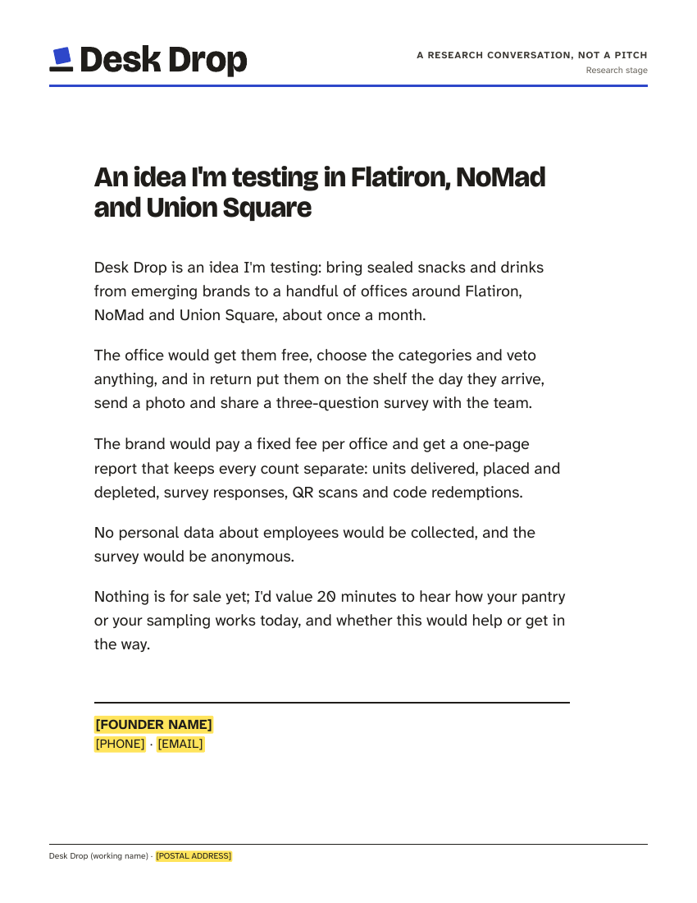
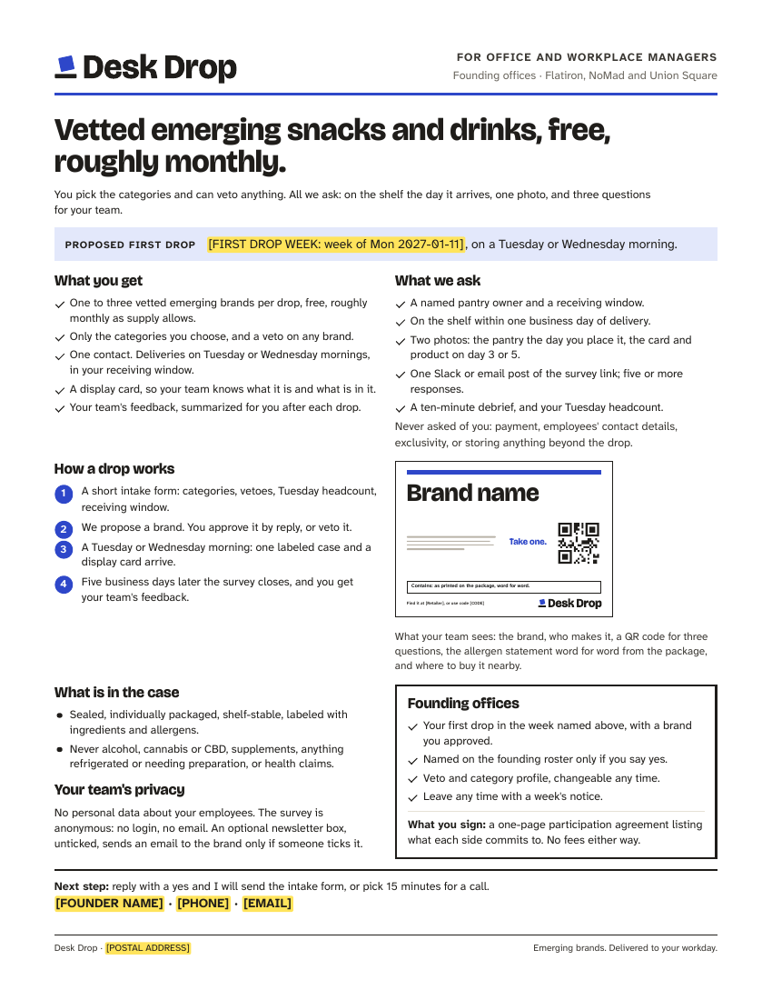
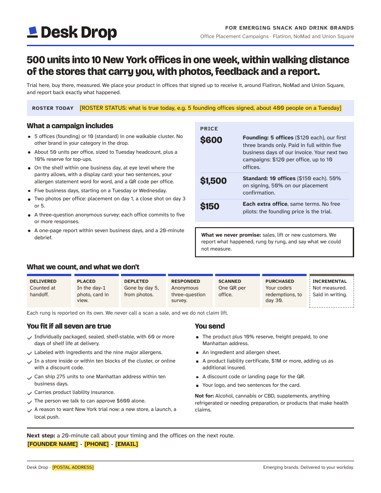
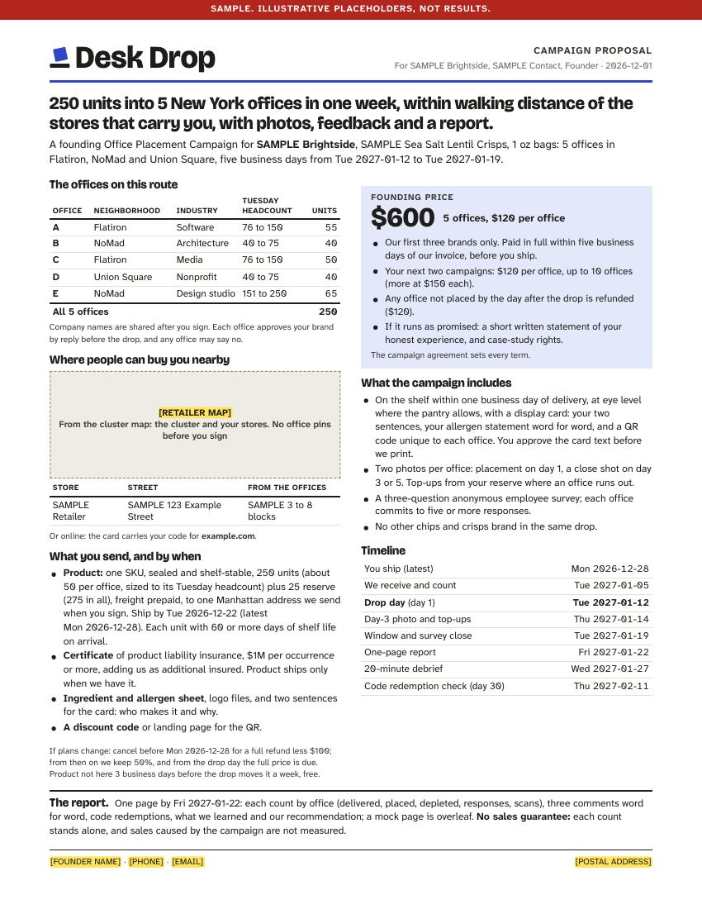
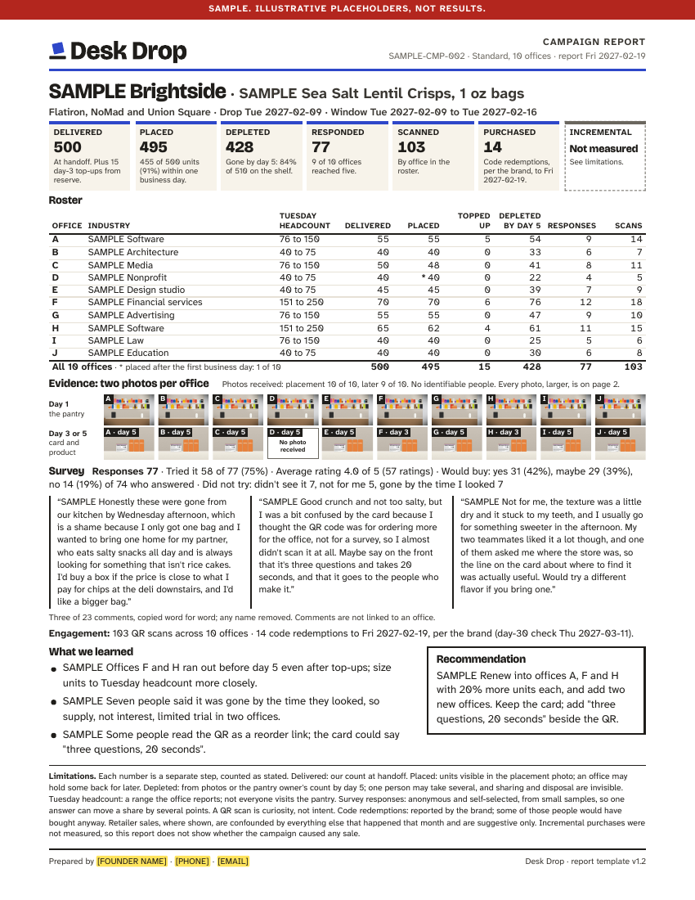
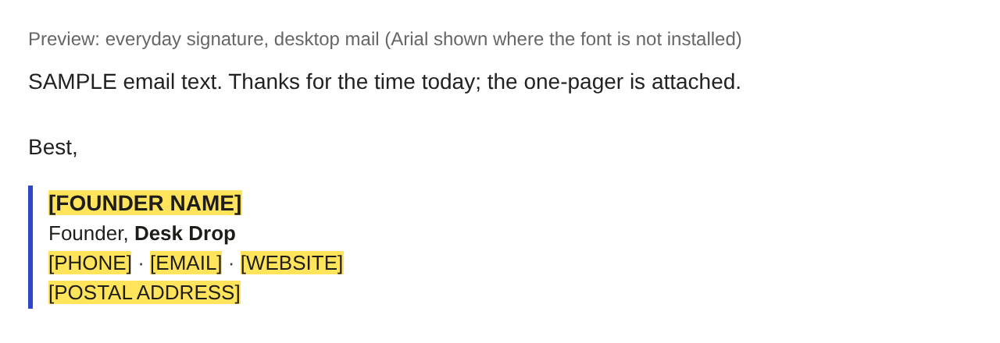

Template v1.1 · 2026-10-24 · one-pagers, discovery one-pager, proposal, report · source: system/dd-docs.css, system/dd-report.js





| Page | US Letter, 8.5 x 11 in, portrait. Emailed as PDF; prints on any home printer at 100%. No bleed: nothing touches the edge. |
|---|---|
| Margins | 0.55 in top, 0.6 in sides, 0.5 in bottom. The report alone uses 0.45 in top and 0.4 in bottom (densest page). The discovery one-pager adds a wide inner margin so it reads like a letter. |
| Grid | 6 columns, 0.2 in gutters (one-pagers). The proposal uses two free-flowing columns with a 0.25 in gutter, so neither column waits for the other. |
| Header | Wordmark sized by cap height (0.25 in; 0.21 in on the report; 0.3 in on the discovery page), kicker and meta right-aligned, 3 px cobalt rule under it. |
| Footer | 1 px ink rule, 7.5 pt: contact or postal address left, tagline or template version right. |
| Color | Ink text on white. Cobalt only for the header rule and one repeated marker (step numbers, ladder rungs). Light tints (cobalt tint, warm paper) for one key box per page. Every page must read in black and white. |
| Element | Face | Size | Note |
|---|---|---|---|
| Title | Bricolage Grotesque ExtraBold | 15.5 to 27 pt | Proposal 15.5 (the positioning line), brand one-pager 17, report 19, office and discovery 25. |
| Section heading | Bricolage Grotesque ExtraBold | 10.5 to 12 pt | |
| Body and lists | Atkinson Hyperlegible Next Regular | 8.8 to 14 pt, floor 8.5 pt | Discovery sentences 14 pt (12 at the smallest). |
| Tables | Atkinson Regular; headers Bold caps 6.8 to 7.5 pt | 8.5 to 9 pt, floor 8.5 pt | Numbers in tabular figures, right-aligned. |
| Verbatim comments (report) | Atkinson Regular, roman | 8.75 pt, floor 8 pt | Roman, not italic: italic loses legibility at this size. Never edited. |
| Notes, ladder hints, limitations | Atkinson Regular | 7 to 7.5 pt, floor 7 pt | The limitations paragraph is fixed at 7.5 pt. |
Identity system · specs/documents-spec.pdf · rebuild: bash render/build-pdfs.sh
Placeholders, SAMPLE, mock pages, image slots, give-way orders, fixed text
| Placeholder | [LIKE THIS] with a yellow highlighter, on screen and on paper. Dates derived from a placeholder drop date print as slots too, e.g. [DATE: Mon 2026-12-28]. --final refuses any placeholder, including unfilled brand.json contacts. |
|---|---|
| SAMPLE | Red band across the top: "Sample. Illustrative placeholders, not results." Appears whenever any value starts with SAMPLE. |
| Mock page | Ink band across the top and a vertical margin label, both "Illustrative placeholders, not results". Used only for the proposal's page 2. It carries the brand's own name, product and dates from the proposal; its text slots are grey examples, never the yellow mark, so a finished proposal has nothing yellow. |
| Image slot | Grey dashed box: "Real pantry photo, no identifiable people". A missing photo prints "No photo received" in a white box. Never a stock photo. |
| Report | Up to five offices: a pair of photos per office, 0.78 down to 0.5 in. Six to twelve: a strip, one column per office, day 1 above and day 3 or 5 below, 0.5 down to 0.38 in. Then comments 8.75 to 8.25 pt, tighter spacing, "learned" 9.5 to 8.5 pt; the later row moves to the evidence page (the day-1 row stays); comments to 8 pt; last resort, every photo moves to the evidence page and page 1 keeps "Photos received: n of N". Never: the numbers, the ladder, a comment's words, the limitations paragraph. Tested: 10 offices with three 70-word comments and a retailer-velocity line, and 12 offices, keep the day-1 strip. |
|---|---|
| Proposal | Six column arrangements are tried in order, each with its own give-way (map 1.3 to 0.95 in, then body 8.8 to 8.5 pt): the standard columns; the cancellation note under the price; the roster across the full width in two halves; for nine or more offices, three narrow tables with the neighborhoods listed once; the timeline as a full-width strip. The first that fits is used. Up to 12 offices, with a landscape map and four stores, tested with real-length details. |
| One-pagers | Office: body 9.5 to 9 pt, card drawing narrower, tighter gaps. Brand: tighter text, smaller ladder notes, tighter gaps, smaller lead and title, lists to 8.5 pt. The contact line moves to its own line when it is long. |
| Discovery | Sentences 14 to 12 pt. |
| All | If it still does not fit: a red "does not fit" bar on screen, an error in the panel, and no PDF (exit 2). |
DDReport.LIMITATIONS), checked present and unchanged on every render; the ladder rung names; "Incremental: not measured". Delivered is the count handed over on drop day, the same number in the ladder and the roster; day-3 top-ups are shown beside it, never added to it. Placed shows the Gate 2 share: units placed within one business day out of units delivered.system/dd-offer.js and the campaign agreement), the campaign specification and "No sales guarantee".Identity system · specs/documents-spec.pdf · rebuild: bash render/build-pdfs.sh
signature/ and avatar/ · built by render/build-signature.js and render/build-avatar.js from brand.json

| Files | signature/signature.html and .txt (everyday), signature-outreach.* (adds the legal pack's commercial-email line), signature-with-logo.html (only once the wordmark PNG is hosted). |
|---|---|
| Content | [FOUNDER NAME]; Founder, the name; [PHONE] · [EMAIL] · [WEBSITE]; [POSTAL ADDRESS]. The postal address is required in commercial email (CAN-SPAM, legal pack file 02). |
| Build | Tables and inline styles only (mail apps strip style sheets). Atkinson Hyperlegible Next, then Arial. 14 px name, 13 px lines, ink and ink-soft text, 3 px cobalt rule. About 1,000 characters, well under Gmail's 10,000 (Gmail Help, opened 2026-10-24). |
| Website | Set WEBSITE to "" in brand.json to leave it out until the site is public. |
Default: cobalt (white symbol on cobalt). It holds at 40 px on light and dark app backgrounds; ink disappears on dark mode and paper loses its edge on white (avatar/test-sheet.png).
| What | The symbol alone, never the name, so it survives a rename. Symbol height 50% of the square, centred and nudged up 2% so the box and shelf sit optically centred, inside the circle most apps crop to. |
|---|---|
| Sizes | 1024, 512, 400, 320, 160, 80, 40 px PNG, plus SVG. Upload 1024 to Slack (512 minimum, 1024 maximum: Slack Help) and 400 to a LinkedIn Page (400 x 400 recommended, 268 minimum: LinkedIn Help). Both opened 2026-10-24. |
| When | A public profile under the working name waits for the name decision (legal pack name-check log: public launch on HOLD). |
Sources: support.google.com/mail/answer/8395; linkedin.com/help/linkedin/answer/a563309; slack.com/help/articles/115005506003; desk-drop-legal-pack/02-email-footer-and-checklist.md and name-check-log.md (v0.5). All opened 2026-10-24.
Identity system · specs/documents-spec.pdf · rebuild: bash render/build-pdfs.sh